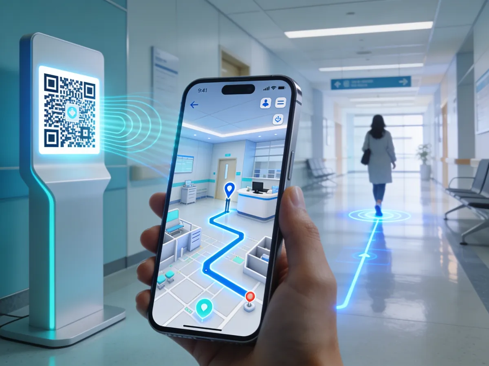
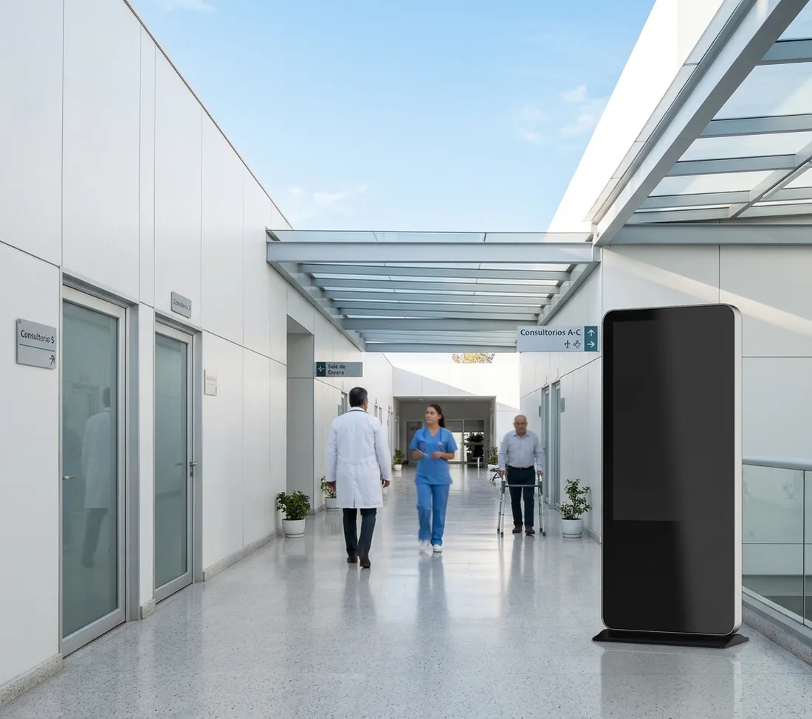
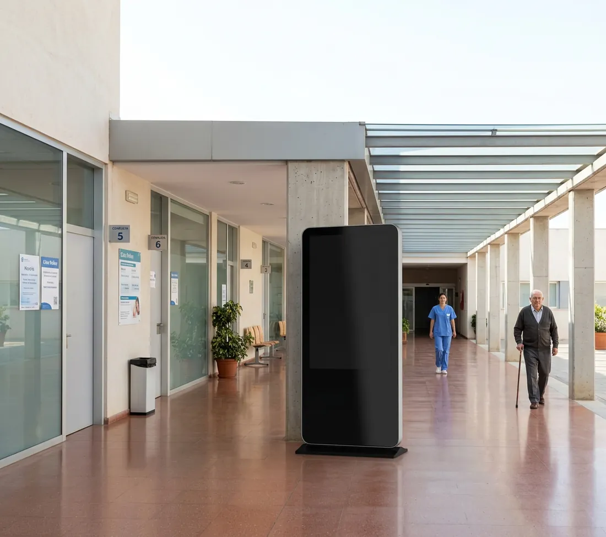
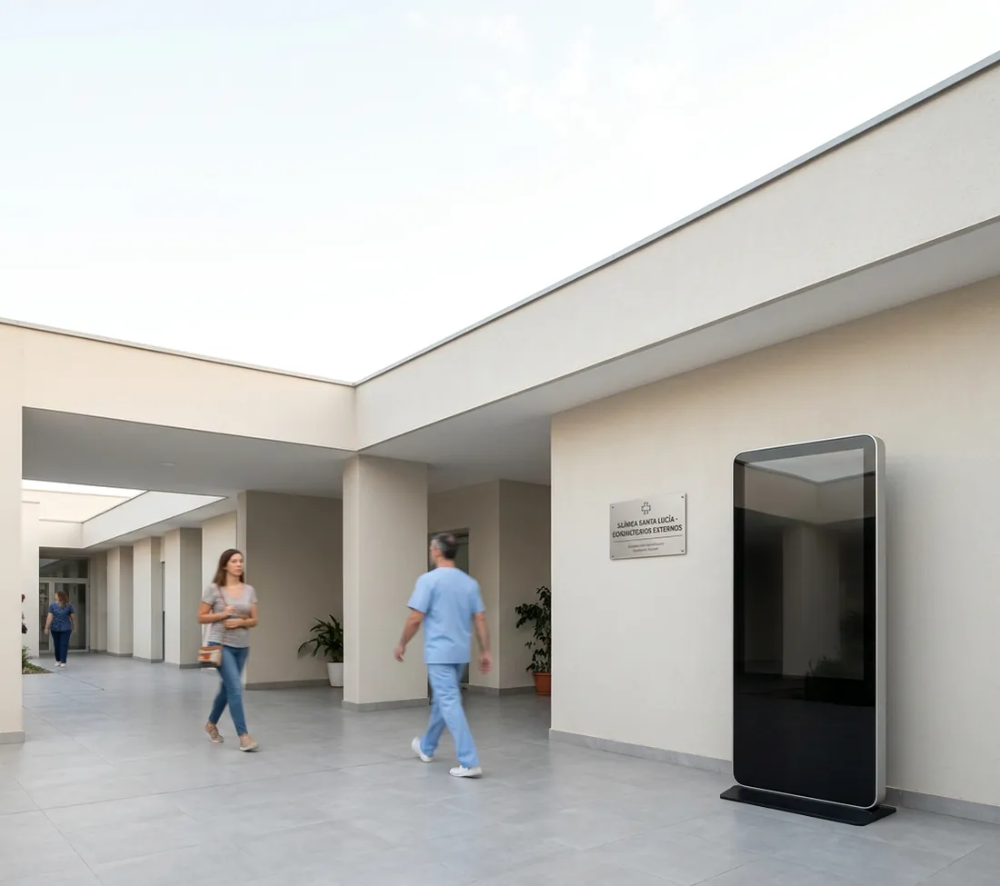
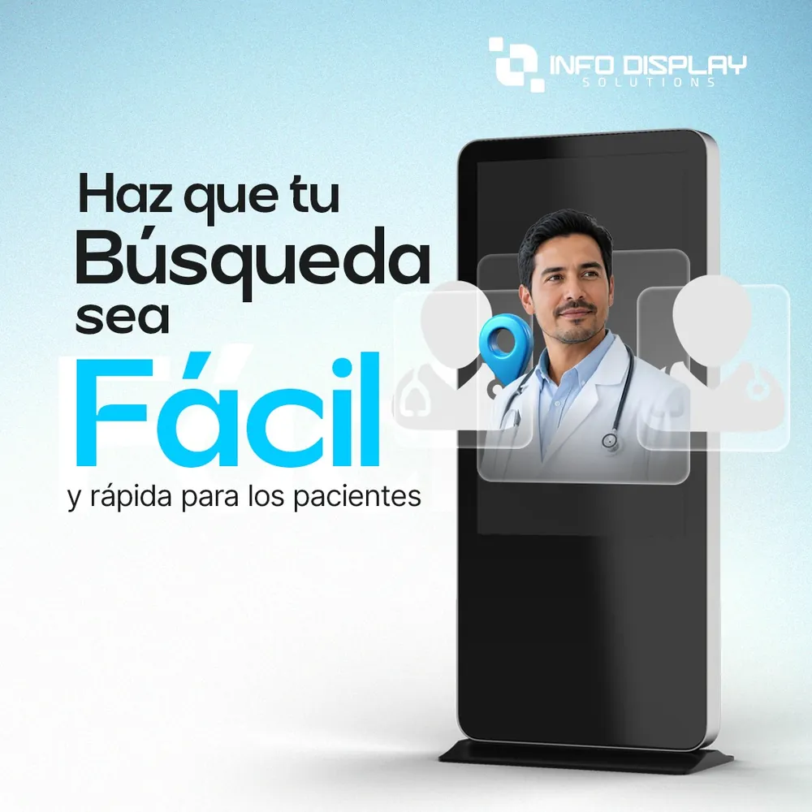

Recepción saturada y pacientes frustrados
Su equipo invierte buena parte de la jornada dando direcciones verbales. Son horas productivas que se pierden y pacientes que se van con una mala experiencia.
El Directorio Médico Digital que transforma la experiencia de su paciente y la rentabilidad de su institución. Mapas 3D interactivos disponibles en cualquier dispositivo, sin descargar apps y con capacidad de monetización publicitaria integrada.
Siga el pasillo central y gire a la izquierda.
Demostración ilustrativa: elija un destino
Tiempo promedio que pierde un paciente buscando su destino en un edificio médico sin directorio inteligente.
Es lo que genera un letrero estático. En ese mismo espacio, un directorio digital produce ingresos por publicidad.
Es lo que tarda en promedio actualizar un directorio impreso. Con un directorio digital, el cambio toma segundos.
Cada minuto que un paciente deambula por los pasillos buscando un consultorio es un costo oculto para su operación y su reputación.
Su equipo invierte buena parte de la jornada dando direcciones verbales. Son horas productivas que se pierden y pacientes que se van con una mala experiencia.
Cada cambio de médico, reubicación de consultorio o nueva especialidad obliga a reimprimir e instalar señalética. Un gasto que nunca termina.
Miles de personas recorren sus instalaciones cada día. Sin pantallas inteligentes, esa audiencia no genera ningún ingreso para la institución.
Una plataforma de orientación, gestión y publicidad que funciona sobre su infraestructura existente.
Sin descargar aplicaciones
Al escanear el código QR con la cámara, el visitante recibe en segundos una ruta personalizada hasta el consultorio en su propio dispositivo móvil. Sin descargar ninguna aplicación.

Pasillos, plantas y consultorios reales
Construimos un modelo tridimensional exacto de su infraestructura. La navegación refleja lo que el paciente verá al recorrer el edificio, con cada espacio identificado.
Médicos, horarios y consultorios al día
¿Un médico cambió de consultorio? ¿Nueva especialidad en el piso 4? Actualícelo desde el panel administrativo y todas las pantallas y rutas móviles se sincronizan al instante.
Tótems, pantallas de pared y móvil
Desde pantallas verticales en recepción hasta tótems táctiles en los accesos y la versión móvil del QR. Toda la instalación muestra la misma información, sincronizada.
Pantallas verticales en recepción, tótems táctiles en los accesos y la versión móvil desde cualquier punto. En el análisis de implementación definimos con usted los puntos estratégicos de visualización.



Miles de personas circulan diariamente por sus instalaciones. Con el Directorio Médico Digital, esa audiencia cautiva se convierte en un activo publicitario digital de alto valor, mientras mejora la experiencia de sus pacientes.
Venda espacios en sus pantallas a las marcas y comercios que quieren llegar a sus pacientes y visitantes.
Desde pantallas verticales en recepción hasta tótems táctiles en los accesos, con un solo contenido gestionado desde el panel.
Qué áreas reciben más visitas, qué especialidades son las más buscadas y en qué horarios se concentra el tráfico peatonal.
Comercios y marcas relacionados con la salud y con su edificio.
Al contactarnos recibirá un Análisis de Implementación Personalizado donde definimos los puntos estratégicos de visualización y el potencial de ingresos publicitarios de su espacio.
Dónde ubicar cada pantalla en su edificio.
Estimado para su espacio y su flujo de visitantes.
Convierta el tráfico diario de su institución en un activo publicitario mientras mejora la experiencia de sus pacientes.
Venda espacios segmentados a laboratorios, farmacias, clínicas de estética, ópticas y locales comerciales dentro de su edificio.
Olvídese de imprimir, montar y reemplazar señalética. En la mayoría de instituciones la inversión se amortiza en los primeros meses.
Conozca en tiempo real qué áreas reciben más visitas, qué especialidades son las más buscadas y en qué horarios se concentra el tráfico peatonal.

Búsqueda fácil⌕Cada directorio se modela sobre su infraestructura real: pasillos, ascensores, escaleras, especialidades y consultorios. El resultado es una orientación intuitiva que coincide con lo que el paciente ve al caminar.
Gemelo digital de su infraestructura, con cada espacio identificado.
El paciente escanea el QR y lleva el mapa interactivo en su teléfono.
Cambie médicos, horarios o consultorios en segundos desde un panel central.
Un recorrido corto, planificado para no interrumpir la atención a sus pacientes.
Análisis de implementación personalizado: definimos los puntos estratégicos de visualización y el potencial de ingresos publicitarios de su espacio.
Modelamos plantas, pasillos y consultorios, y cargamos su directorio de médicos desde Excel o su sistema actual.
Instalamos en horarios de baja actividad y capacitamos a su equipo administrativo en el panel.
Monitoreamos cada pantalla en tiempo real, las actualizaciones del sistema están incluidas y sus pantallas quedan listas para vender espacios publicitarios.
Interrumpir la operación de una institución médica no es una opción. Por eso su equipo no tiene que tocar nada.
Monitoreamos cada pantalla en tiempo real desde nuestro centro de operaciones. Si algo falla, empezamos a resolverlo antes de que usted lo note.
Instalamos en horarios de baja actividad. El proceso toma de 1 a 3 días hábiles sin afectar el flujo de pacientes.
Canal exclusivo por WhatsApp Business con un especialista asignado que conoce su instalación. Sin call centers ni tickets olvidados.
Las nuevas versiones del software, mejoras de interfaz y funciones nuevas no tienen costo adicional.
Opera en su red local o en la nube. Se integra con directorios en Excel, sistemas hospitalarios o bases de datos propias.
Ante un corte de red, la navegación y la información de consultorios siguen disponibles con la última versión sincronizada.
Sesiones para el personal que administra el panel. Cualquier persona puede actualizar información sin conocimientos técnicos.
El directorio no recolecta, almacena ni procesa datos personales. La navegación es anónima: no hay registro de identidad, historial clínico ni información sensible en ningún punto.
Si su duda no está aquí, escríbanos y la resolvemos en el análisis de implementación.
No. Escanea el código QR con la cámara de su teléfono y la ruta se abre en el navegador. También puede consultar directamente los tótems y pantallas.
Entre 1 y 3 días hábiles, en horarios de baja actividad o fuera de horas de atención, sin afectar el flujo de pacientes.
Usted vende espacios segmentados en sus pantallas a laboratorios farmacéuticos, farmacias internas, clínicas de estética, ópticas y locales comerciales de su edificio. En el análisis de implementación definimos el potencial de ingresos publicitarios de su espacio.
El directorio sigue funcionando con la última versión sincronizada hasta que el servicio se restablece.
Sí. Trabajamos con directorios en Excel, sistemas de gestión hospitalaria o bases de datos propias, con integración asistida por nuestro equipo.
No. El sistema no recolecta datos personales ni información clínica. La navegación es completamente anónima.
Cada hospital y edificio de consultorios es distinto. Al contactarnos recibirá un análisis de implementación personalizado con los puntos estratégicos para sus pantallas y el potencial de ingresos publicitarios de su espacio.
¿No ve el formulario? Ábralo en una pestaña nueva.